Un trabajo diligente y dedicado sigue impulsando a Chase Atlantic. Formado en 2011, el trío nacido en Australia y afincado en Los Ángeles -Mitchel Cave, Clinton Cave y Christian Anthony- ha creado en silencio su propio rincón de la música popular. Representando el eslabón perdido entre el woozy trap, el R&B y el sychedelically-spun alternativo, los chicos desdibujan las fronteras entre géneros a través de una experiencia intrépida y unas inclinaciones melódicas innatas.
DISCOGRAFÍA
sencillos y ep
DALLIANCE - EP 2014
MEDDLE ABOUT 2014

NOSTALGIA - EP 2015
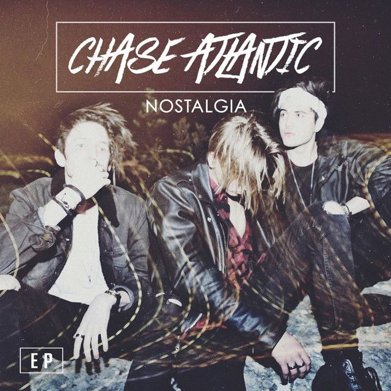OBSESSIVE 2016
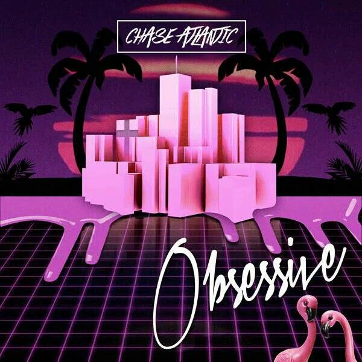PARADISE - EP 2016
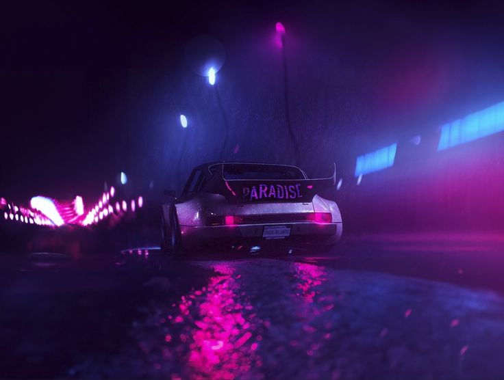PART ONE 2017
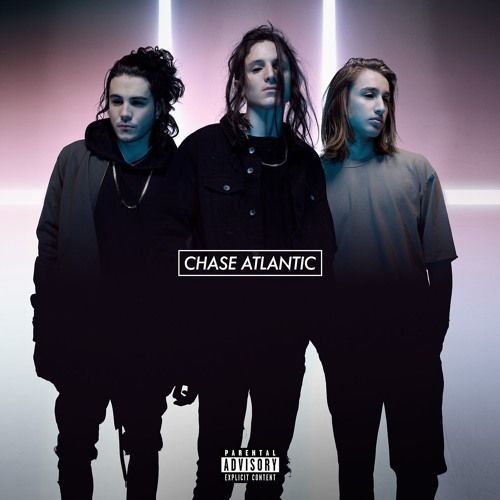PART TWO 2017
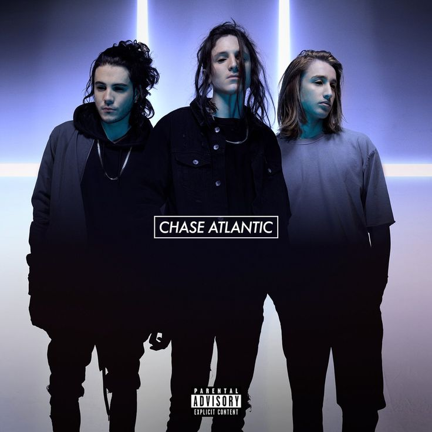PART THREE 2017

NUMB TO THE FEELING 2018

TIDAL WAVE 2018

DON´T TRY THIS 2019

TOO LATE (Billy Martin Remix) 2019

HIT MY LINE 2020

OUT THE ROOF 2020

MOLLY 2020
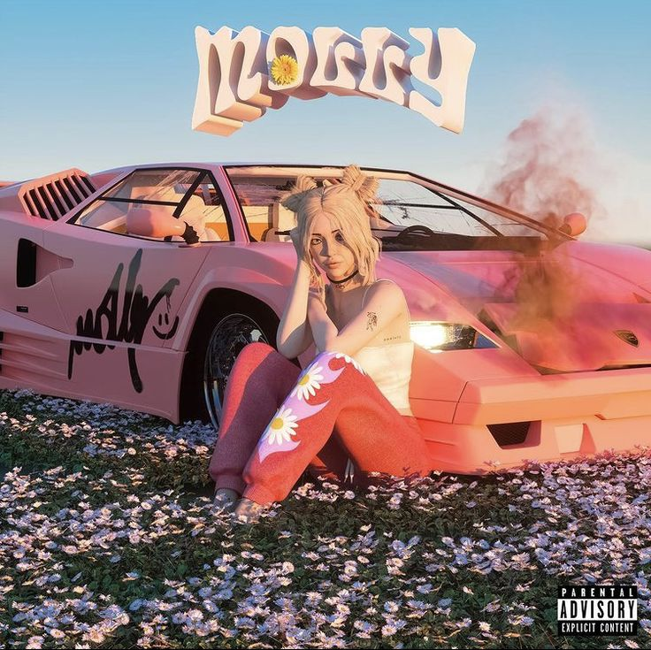SLIDE 2021
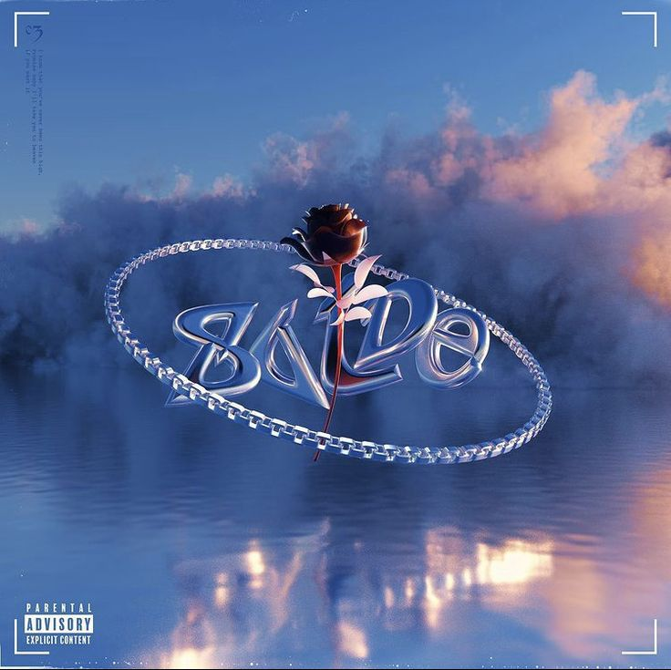EMPTY 2021
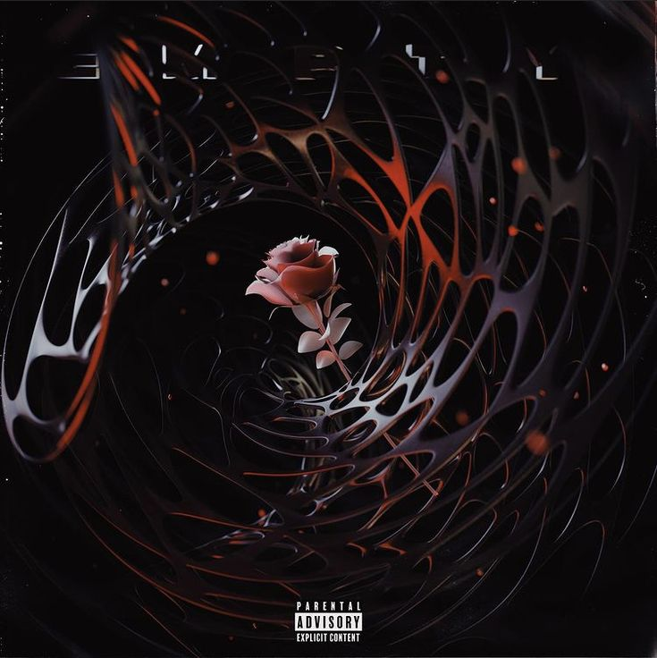HURTS 2 ATE SOMEBODY (ELIO, No Rome) 2021
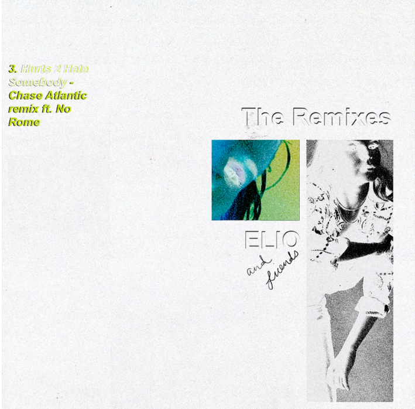OHMAMI 2021
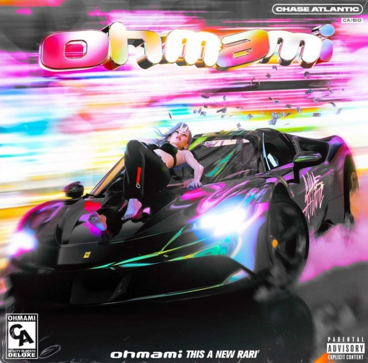OHMAMI (with Maggie Lindemann) 2021

ESCORT 2021
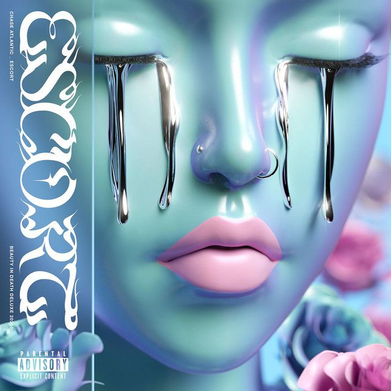21 2022
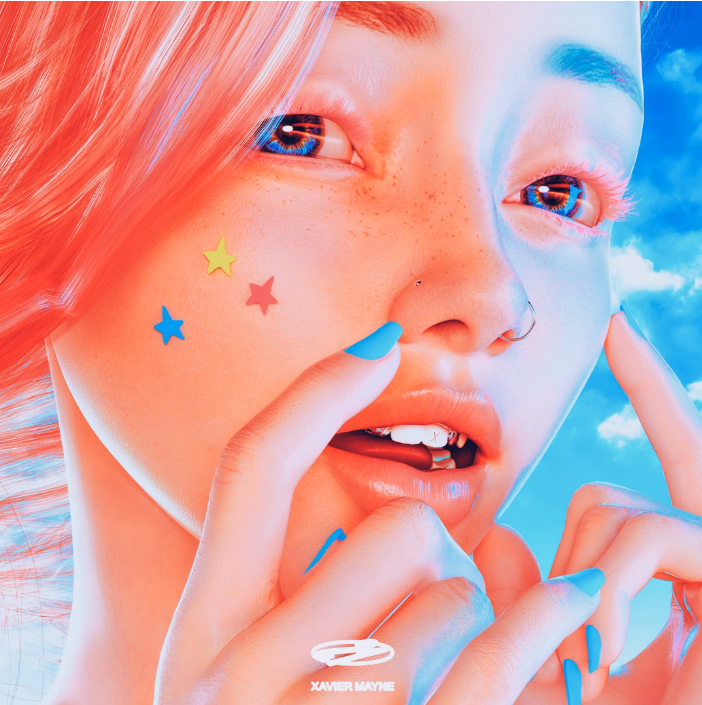FOR HER 2022

MAMACITA 2023
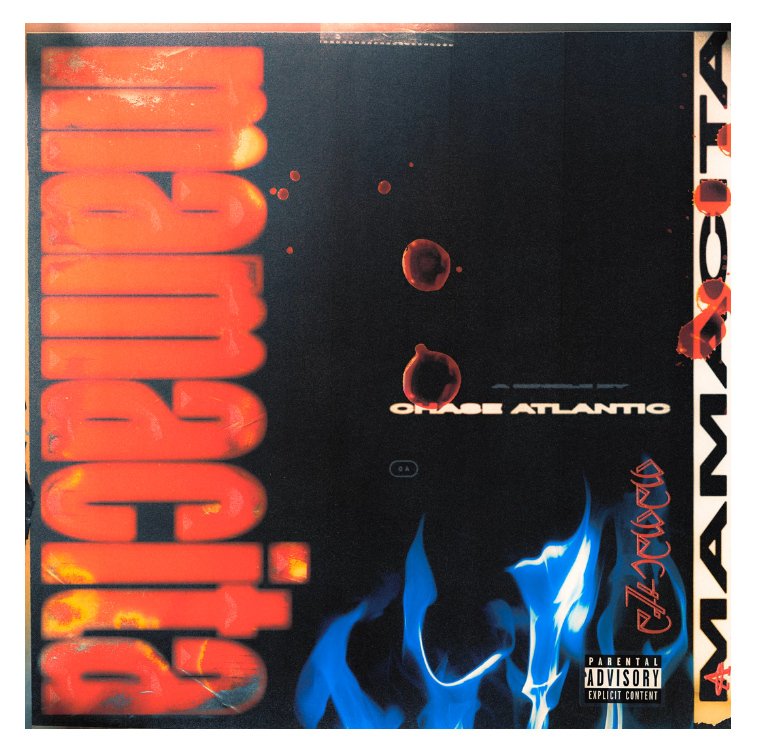ÁLBUMES
CHASE ATLANTIC 2017
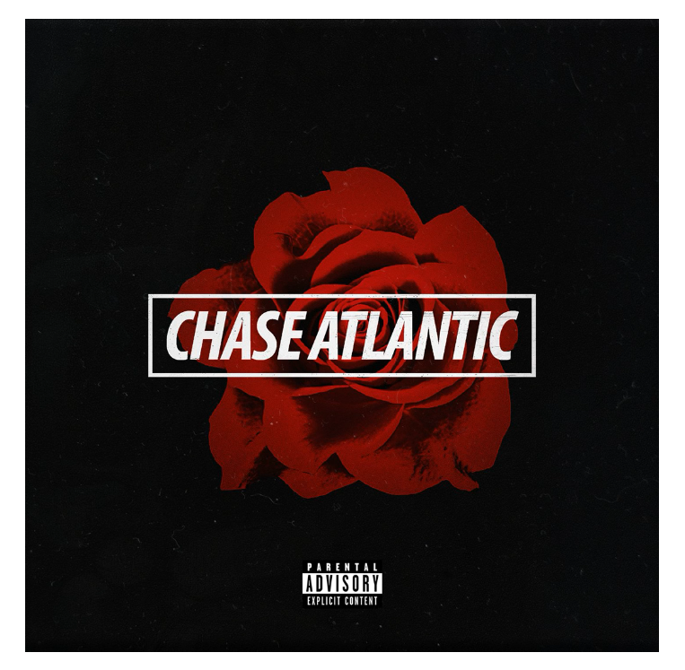PHASES 2019
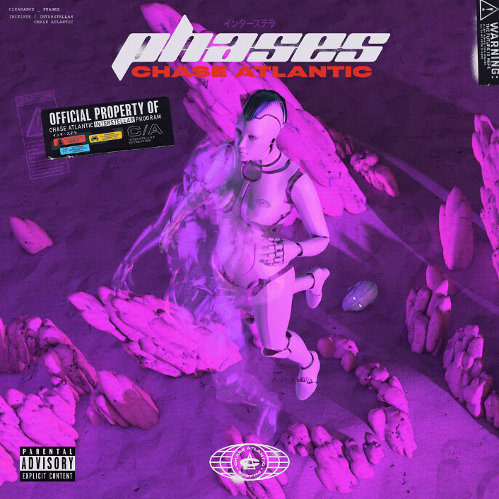BEAUTY IN DEATH 2021
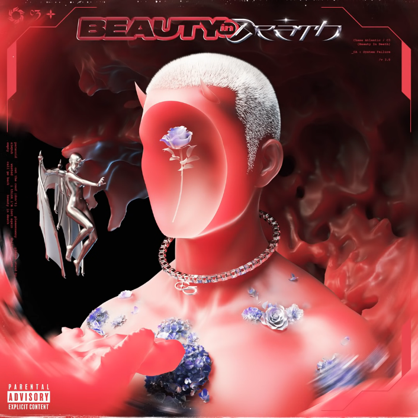BEAUTY IN DEATH (DELUXE EDITION) 2022
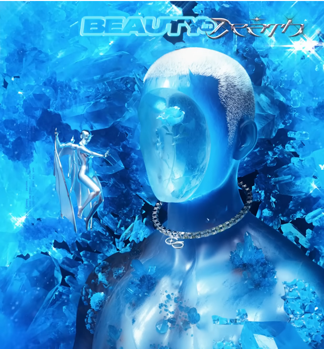